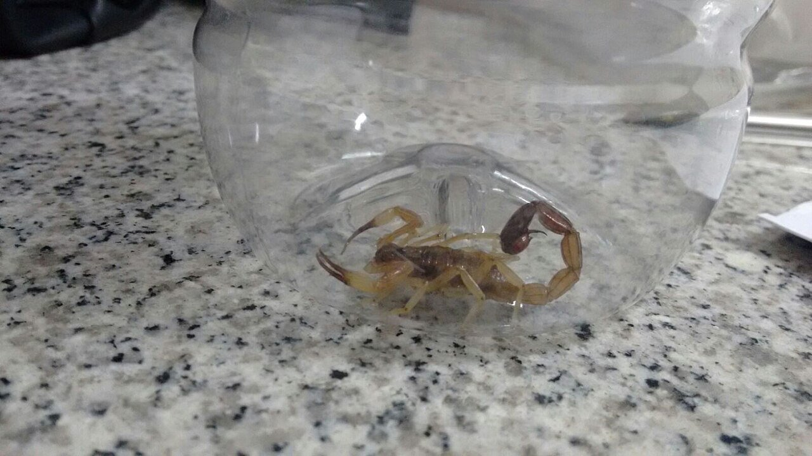
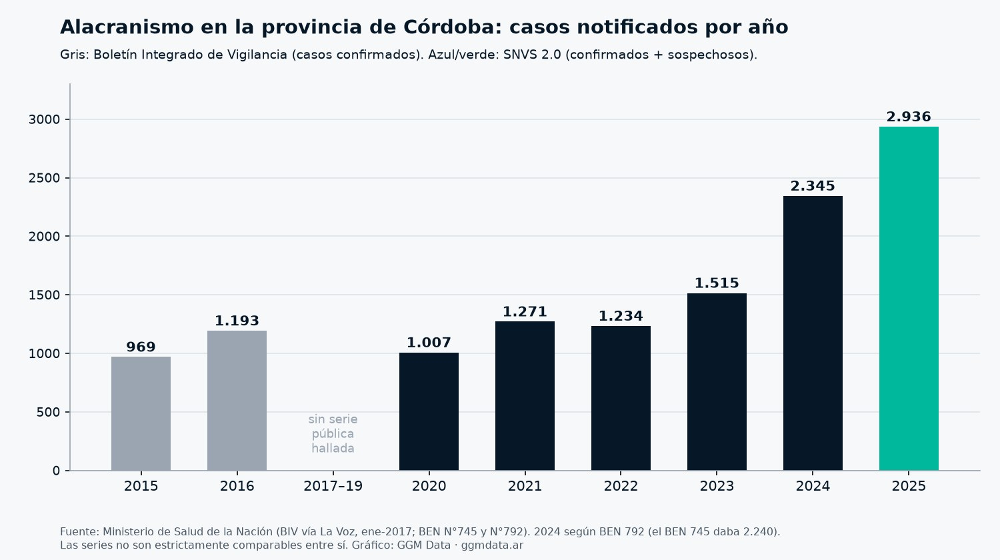

Córdoba · Salud
Alacranes en Córdoba: los casos notificados casi se triplicaron desde 2020 y la provincia ya es la que más registra en el país
En 2025 hubo 2.936 casos de alacranismo notificados en la provincia, contra 1.007 en 2020, según el Ministerio de Salud de la Nación. Hay registros de picaduras urbanas desde los años 90, pero el salto fuerte es de la última década. Qué explica el aumento, dónde se concentra y qué le corresponde a cada nivel del Estado y a cada vecino.

En 2025 se notificaron 2.936 casos de alacranismo en la provincia de Córdoba, la cifra más alta de todas las jurisdicciones del país, apenas por encima de Tucumán (2.875). El dato surge del Boletín Epidemiológico Nacional (BEN) N°792 del Ministerio de Salud de la Nación, publicado en enero de 2026. Un año antes, en 2024, habían sido 2.345: el aumento fue del 25%, mientras el total nacional bajaba un 6%.
Medido por población, Córdoba queda tercera, con 87,5 casos cada 100.000 habitantes, detrás de Tucumán (192,6) y La Rioja (152,7). La media nacional es 22,4.
Desde cuándo
El alacrán no es nuevo en la ciudad. En marzo de 1998, La Voz del Interior informaba que el Hospital Infantil Municipal recibía "una vez por semana" a un niño picado, desde hacía un mes y medio. El Centro de Zoología Aplicada de la Universidad Nacional de Córdoba (UNC), que recibe ejemplares de vecinos desde 1994, advertía en 2010 un "incremento en los encuentros entre las personas y estos animales" en la década previa.
Los números oficiales muestran la aceleración posterior. El Boletín Integrado de Vigilancia de la Nación registró 969 casos confirmados en Córdoba en 2015 y 1.193 en 2016. Con el sistema actual (SNVS 2.0, que suma confirmados y sospechosos), la provincia pasó de 1.007 casos en 2020 a 1.271 en 2021, 1.234 en 2022, 1.515 en 2023, 2.345 en 2024 y 2.936 en 2025. Las series no son estrictamente comparables y no se halló dato público para 2017-2019.
En el Hospital de Niños de la Santísima Trinidad, el Servicio de Toxicología registró 143 niños picados en 2015, 166 en 2016, 266 en 2017 y 281 en 2018, según datos difundidos por su jefa, Nilda Gait.

Por qué se multiplicó
La especie que preocupa es la que durante décadas se llamó Tityus trivittatus. En 2021, un equipo del CONICET y del Museo Argentino de Ciencias Naturales liderado por Andrés Ojanguren-Affilastro la redefinió como Tityus carrilloi, nombre que ya usa el Ministerio de Salud. Fuera de su área natural sus poblaciones son solo hembras que se reproducen sin macho (partenogénesis): un ejemplar trasladado sin querer puede iniciar una colonia. Según un estudio del CONICET publicado en 2025, las especies partenogenéticas de Tityus ampliaron su distribución hasta casi un 300% en algunos casos en los últimos 50 años, con ayuda del transporte humano.
En la ciudad, la hipótesis de los investigadores de la UNC apunta a la infraestructura: los alacranes "han invadido los sistemas de desagües cloacales y a través de ellos proliferaron e ingresaron a las viviendas", explicó en 2010 el biólogo Gustavo Reati. Allí encuentran cucarachas para alimentarse y no tienen predadores. Según la UNC, las casas viejas con desagües rotos o pozos negros son más propensas, y las obras y movimientos de tierra dispersan ejemplares.
El calor también pesa. "Las temperaturas empiezan a aumentar, en vez de ser 27° o 28° son de 32° y hasta de 40°", dijo Gait en enero de 2026. A nivel nacional, los casos se concentran en diciembre y enero y caen en junio, julio y agosto.
Parte del aumento puede reflejar que hoy se notifica mejor. Ningún informe oficial consultado separa ambos efectos.
Dónde y cuándo
El mapa de capturas de la UNC (2010) marcaba más hallazgos en Alto Alberdi, Alberdi, San Vicente, Crisol, Güemes, Las Palmas, Pueyrredón, Centro y Villa Cabrera. En 2019, Gait dijo que "ya no se puede determinar una zona": hubo casos en Alberdi, Villa El Libertador y en un country. La UNC lo ubica también en Cruz del Eje, San Francisco, Balnearia, Jesús María y Río Cuarto. No hay una serie oficial pública por barrio.
Los casos graves
La mayoría de las picaduras solo causa dolor intenso, pero en niños pequeños puede ser mortal. Entre los casos informados en la provincia murieron un niño de 8 años en barrio Patricios (2010), dos niñas en enero de 2017 (Villa María y Villa Carlos Paz), un niño de 2 años en Villa Urquiza (2018) y una beba de 18 meses de Monte Maíz (2020). En todo el país hubo 7 muertes entre 2020 y 2024, todas en menores de 4 años; en 2025 no se notificaron fallecidos.
Qué le toca a cada uno
- Nación: el Instituto Nacional de Producción de Biológicos de la ANLIS-Malbrán es el único productor del antiveneno escorpiónico del país. Su producción depende de los alacranes vivos que envían las provincias.
- Provincia: el Programa de Zoonosis informa entre 61 y 65 centros con antivenenos según el documento consultado. El Hospital de Niños es el centro referencial provincial de Toxicología. Según Gait, con unas 500 colas de alacrán se produce un frasco de antiveneno.
- Municipalidad de Córdoba: es responsable del Hospital Infantil, que es referencia pediátrica junto al de Niños, y de las campañas de prevención de su Secretaría de Salud. No se encontraron datos públicos sobre acciones municipales específicas en la red cloacal vinculadas a alacranes.
- Vecinos: rejillas con malla en desagües, burletes, camas separadas de la pared, sacudir ropa y calzado, no acumular escombros ni leña. El Ministerio de Salud de la Nación aclara que la fumigación no actúa sobre el alacrán, solo sobre los insectos de los que se alimenta.
Qué hacer ante una picadura
Lavar con agua y jabón, aplicar frío y acudir de inmediato al centro de salud más cercano, si es posible con el alacrán en un frasco. Nada de cortes, torniquetes, remedios caseros ni automedicación. En la ciudad de Córdoba, para menores de 14 años la Municipalidad indica el Hospital Infantil Municipal (Luis de Góngora 550) y el Hospital de Niños de la Santísima Trinidad (Bajada Pucará 787); para adultos, el Hospital Rawson, articulado con el Hospital de Urgencias. El Ministerio de Salud provincial suma el Pediátrico, el Misericordia y el Nuevo San Roque. Consultas toxicológicas: Hospital de Niños, guardia (0351) 458-6400; Centro Nacional de Intoxicaciones, 0800-333-0160, las 24 horas.
Preguntas que siguen abiertas
- ¿Cuántos casos hubo en Córdoba en 2017, 2018 y 2019 según el sistema oficial?
- ¿Cuántas muertes por alacranismo registró la provincia año por año?
- ¿Qué barrios concentran hoy las notificaciones?
Fuente
Ministerio de Salud de la Nación (Boletín Epidemiológico Nacional N°745, febrero de 2025, y N°792, enero de 2026 · Boletín Integrado de Vigilancia, vía La Voz del Interior, enero de 2017) · Ministerio de Salud de la Provincia de Córdoba (Programa de Zoonosis · boletín epidemiológico, noviembre de 2022 · directorio de centros toxicológicos) · Municipalidad de Córdoba, Secretaría de Salud (20/11/2025) · Universidad Nacional de Córdoba, Centro de Zoología Aplicada (Argentina Investiga, 2010 · UNCiencia) · CONICET (julio de 2025) · Revista del Museo Argentino de Ciencias Naturales (2021) · Universidad Nacional de La Pampa (2021) · Hospital de Niños de la Santísima Trinidad (declaraciones de Nilda Gait a La Voz del Interior, 2019, y El Doce, 2026) · La Voz del Interior (1998, 2017, 2019) · Clarín (2010) · Infobae (2017) · La Nación (2018, 2020) · Hospital Nacional Posadas · Elaboración: InfoDataGGM